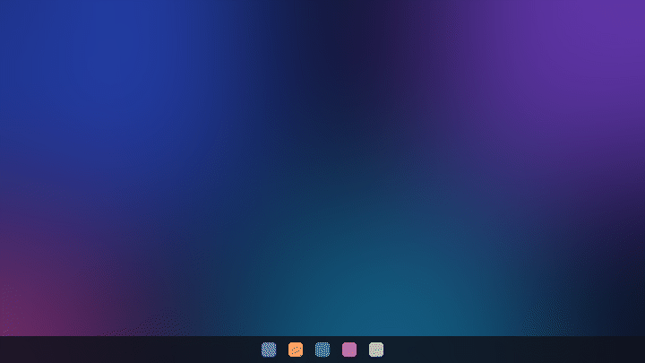
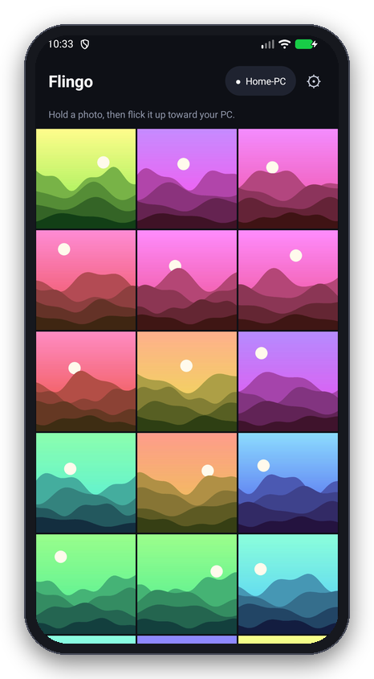
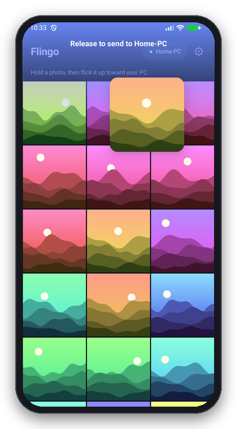
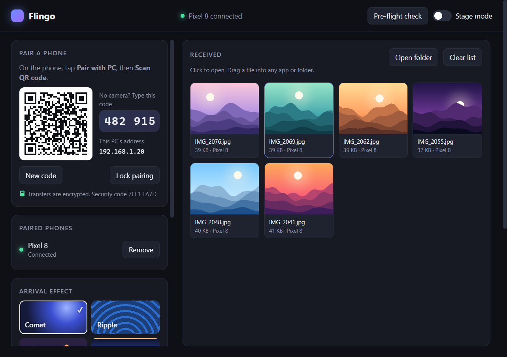
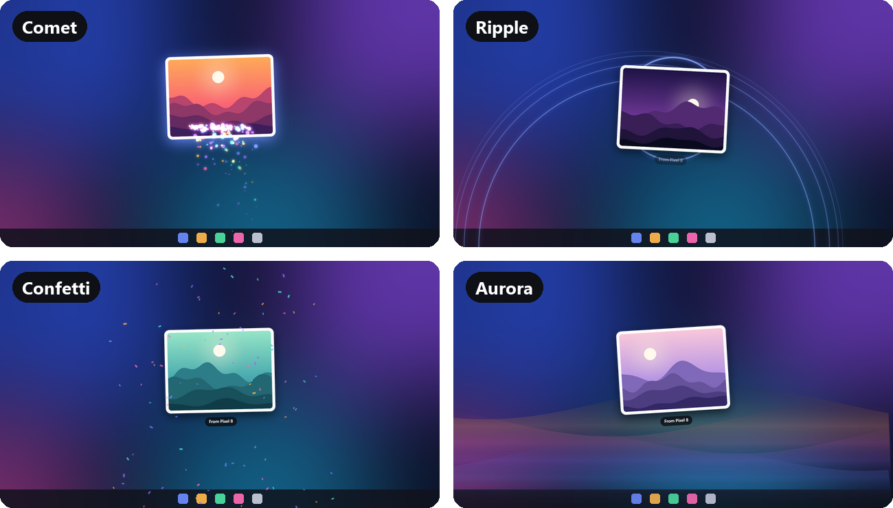

Hold
Press a photo in your gallery. It lifts off the grid and follows your finger.
Android → Windows · Linux
Hold a photo, flick it toward your computer, and it flies onto the screen and saves. No cable, no cloud, no account. Files travel directly over your own Wi-Fi.
Free and open source. Needs an Android phone and a Windows or Linux computer.

Press a photo in your gallery. It lifts off the grid and follows your finger.
Throw it upward, or drag it into the glowing zone at the top of the screen.
It enters the bottom of your computer screen where you aimed it, then saves to your folder.



Four arrival effects, drawn on a see-through layer that never blocks your mouse. Or turn them off and save quietly.

Install it on your phone and on your computer, then pair them once by scanning a QR code.
Android 10 or newer.
Download APKOpen the file on your phone and allow installing from your browser when asked.
Windows 10 or 11, 64-bit.
Download installerWhen Windows Firewall asks, choose Allow so your phone can reach the PC.
Kali, Debian, Ubuntu and other 64-bit distros.
Download .deb .tar.gzsudo apt install ./flingo-linux.debGNOME hides tray icons, so Flingo stays in the dock there. Running as root? Start it with flingo --no-sandbox.
All downloads come from the latest GitHub release.
No. The phone talks straight to your computer on the local network. Nothing is uploaded anywhere.
Yes. Every transfer is encrypted, and only phones you have paired can send. When you pair by scanning the QR code, the phone also learns your computer's identity, so it will not send to anything else. You can lock pairing so nobody new can join.
Scan the QR code shown in Flingo on the computer. It works even on Wi-Fi that stops devices from finding each other. Then press Pre-flight check on the computer: it tells you if a firewall is in the way.
Yes. Stage mode keeps the screen awake, locks pairing and lets you pick which screen the photo lands on. The live demo runbook walks through the setup.
Yes. Videos appear in the gallery, and any file can be sent with Share → Flingo from another app.
Not yet. It is on the roadmap.